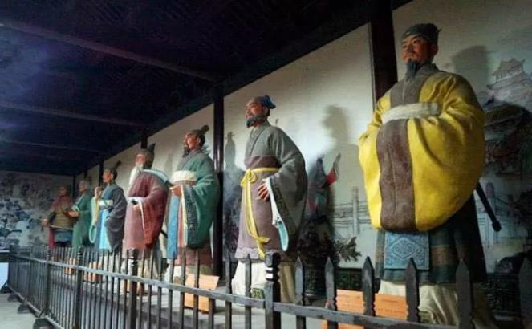
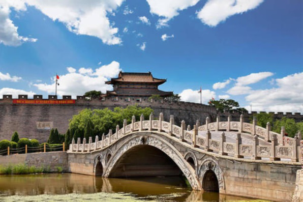
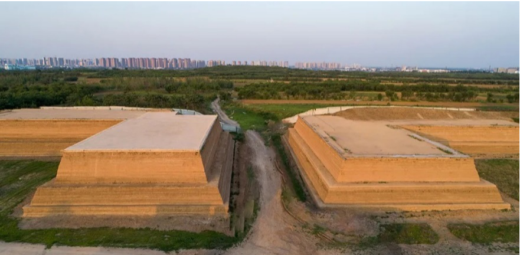
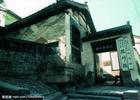
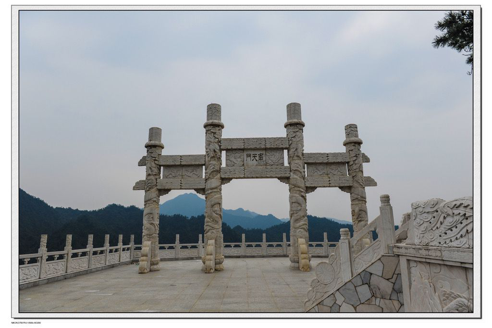

2020年第四届“华夏文化，有冀可寻”河北地域特色文化线上展览|古赵文化篇（一）
赵文化是以赵国都城邯郸为中心,而逐步发展提炼出来的一种地域文化。在当时,她不仅是中原文化的重要支柱,而且与其他地域文化交相辉映,成为民族文化的重要组成部分。赵文化是一种起源较早的地域文化现象。她是在晋文化的母体中孕育生成的。这里是中华民族古老文明的发祥地,而且直接产生于黄河文明的摇篮中。
赵文化滥觞于舂秋，兴旺于战国，延续至两汉，在历史的长河中流淌至今，形成了自己独特的风韵。是以胡服骑射、荀子为代表的，其基本内涵为开放、进取、包容，展现出赵国在逐鹿中原时所表现出的改革创新精神。她是中华民族古老文化的源头之一，是华夏文化与北方草原游牧文化的交汇、融合和升华的结晶。她丰厚博深、魅力四射、光彩照人，是邯郸地域文化中的代表。
赵文化是华夏文明的重要组成部分。赵文化形成的核心区域就在河北邯郸。邯郸作为战国时期赵国的都城长达一个半世纪之久。
这里产生了发达的冶铁、制铜、制陶等手工业，形成了繁荣的城市商业贸易，孕育了荀子、公孙龙、慎到等一代学术大师，涌现出赵武灵王、廉颇、蔺相如、赵奢等一批慷慨悲歌的英雉人物。
赵文化其主流内涵是“开拓进取，竞争图强，兼收并蓄，改革创新”，贯穿其中的以人为本、广揽贤才、团结向上、忠勇报国等思想，对于我们今天的解放思想、改革开放仍然具有极其重要的现实意义。（选自曦和）
邯郸市位于河北南端，晋冀鲁豫四省交界处，西依太行山脉，东连华北平原，北连邢台、南毗安阳。
邯郸市是河北省第三大城市，因邯山至此而尽得名。邯郸历史悠久，文化灿烂，是中国成语典故之都和中国散文之城、太极之乡。旅游资源丰富，有多批非物质文化遗产、著名景点景区、地方特产等。（选自游山玩水）
一、丛台公园
丛台亦名“武灵丛台”，相传建于赵国武灵王时期（公元前325—前299年），已有2000多年的历史。
赵武灵王建筑丛台的目的，是为了观看歌舞和军事操演。史载，丛台有天桥、雪洞、妆阁、花苑诸景，结构奇特，装饰美妙，在当时扬名于列国。
但在2000多年的漫长岁月中，丛台经历了无数次的天灾人祸的破坏，多次改修重建，有了很大的变化。据地方志载，自明朝中叶（公元1500年前后）以来，就修复了十多次。其中清代乾隆十五年（公元1750年）建行宫于台上，后在道光十年（公元1830年）遇地震连台毁坏。现在我们所见之丛台，是清同治年间（公元1862—1874年）修建的，以后又进行过重修。“丛台”名称的来历，是因为当时许多台子连接垒列而成。《汉书》颜师古释文：“连聚非一，故名丛台。”古人曾用“天桥接汉若长虹，雪洞迷离如银海”的诗句，描绘丛台的壮观。唐代大诗人李白、杜甫、白居易等曾多次登台观赏赋诗。
七贤祠，位于河北省邯郸市丛台区的丛台公园内古丛台北侧，面南而立，是为战国时期赵国的七贤而建，始建于明万历年间，原为“三忠祠”和“四贤祠”。三忠即救赵氏孤儿的韩厥、程婴、公孙杵臼；四贤为廉颇、蔺相如、赵奢和李牧。[1]
而墙壁的东西两侧则是家喻户晓的七贤事迹，即赵奢的“秉公执法”，廉颇、蔺相如的“完璧归赵”、“负荆请罪”、“将相和”，以及韩厥、程婴、公孙杵臼的三忠舍身救“赵氏孤儿”等。

丛台东湖上的望诸榭，是为纪念战国时期限的著名军事家乐毅而建，乐毅原为燕国名将，擅长用兵，他本为魏将乐关羊之后，燕昭王下招求贤时， 乐毅自魏往， 被子留任为亚卿，曾率秦，韩、赵、魏、燕王之师代齐,克城70余座屡立战功，燕昭王死后，燕惠王误信齐人田单的反间计，乐毅被迫交出兵权，出奔赵国，受封于观津，号望诸君.

丛台广场，说的“胡服骑射”就发生在这里的一件大事，赵武灵王即位时已是战国中期，剧烈的兼并战争加之北边游牧民族的骚扰，使赵国处于严重的威胁之下。素有雄才大略的赵武灵王自己与王公贵族带头穿起胡服，就是简洁方便的服装，并下令将军大夫嫡子代吏皆胡服，练习骑射，发展骑兵、水军以及一系列战略部署，使赵国军事力量为之大增，赵国版图也进一步扩大，后来赵国跻身“战国七雄”之列，不能不说“胡服骑射”是一次成功的军事改革。
（选自曦和）
二、娲皇宫
娲皇宫，位于河北省邯郸市涉县中皇山上，占地面积5平方公里，由服务区、补天园、补天湖、娲皇宫和补天谷五个园区组成，是神话传说中女娲 “抟土造人、炼石补天”的地方，是我国建筑规模最大、肇建时间最早的祀奉人类始祖女娲的古代建筑群 ，她还被誉为“华夏祖庙”。
娲皇宫俗称“奶奶顶”，位于涉县西北唐王峧山腰。那里群山叠翠，流水环绕，风景秀丽，为涉县古八景之一，是远近闻名的旅游胜地。娲皇宫依山就势，巧借天然，人称之为“天造地设之境”。
其中的娲皇阁(三阁楼)，坐东面西，为娲皇宫主体建筑，古 有“倚崖凿险，杰构凌虚”之称，它悬空而立，高达23米，为歇山斗拱硫璃瓦顶。纵观娲皇阁，嵌于绝壁，雕梁画栋，登楼远眺，太行群山涌翠，漳水如带，堪称“天造地设之境”。（选自游山玩水） 
三、广府古城
1、永年广府城：也称永年城、广府古城、广府城 、水城、太极城
、水中城，位于河北省东南部、邯郸市东北45华里滏阳河畔的永年洼里，距离县政府驻地临洺关25公里。
因历史上曾为广平府治所，故称广府。现为河北省重点文物保护单位。

地理环境
古城周围水网纵横，湖塘密布，水生植物种类繁多。古城周围芦苇荡和荷花淀众多，荷花淀在北方还是不多见的，每到夏季，万亩荷塘争奇斗艳，芦苇荡蜿蜿蜒蜒迷宫似的水道犹如一个“龙”字。
历史沿革
广府古城的历史可以上溯至春秋，当时为曲梁城，距今已有2600多年的历史。早在春秋至魏晋时期，已有城池规模。隋末唐初，夏王窦建德曾在此建都，为历代郡、府、州、县治所。唐代以前为土城，周长六里二百四十步。元朝侍郎王伟做郡守时，将土城周长增为九里十三步(4522米)
。明嘉靖二十一年(1 542年)，知府陈俎调集九县民工，历时十三年将土城改为砖城，城高12米、宽8米，建垛口一千七百五十二处，城垣上建有四座角楼，四门上建有城楼。嘉靖四十三年(1564年)，知府崔大德为防水患和战事，增修四瓮城。城内面积1.
5平方公里，街巷纵横，有四大街、八小街、七十二道小拐弯，现仍存原貌。
建筑特点
广府古城墙，不但颇具规永年城 模，雄伟壮观，而且保存完好。城墙，古代军事防御设施，由墙体和其它辅助军事设施构成的军事防线。
主要由墙体女墙、垛城楼、角楼、城门和瓮城等部分构成，其外围还有护城河。
2、广府太极拳
下雨时的芦苇荡多了几分诗意，太极宗师杨露禅，他先后用了二十年时间，三下陈家沟学得太极拳精髓，粘黏走化，引进落空，千变万化，神出鬼没，达随心所欲的境界，开创了杨氏太极拳。
等到秋季的时候，更是一片水上的 “金色麦浪”
第一部分：历史渊源
1.洛河之地
《易传·系辞》载：“河出图，洛出书，圣人则之。”汉族人文始祖伏羲看到河洛交汇现象，依据“河图”、“洛书”信息，触发灵感，从而创造出了《易经》，产生了太极文化。所以，自古人称“天下太极出河洛”。
自古以来，河洛汇流处无时无刻不流淌着太极文化之血，联系着河洛文化之脉，缔结着中原文化之根，蕴含着中华文化之魂。她是汉族的文化丹田！据史载：黄帝、帝尧、夏禹、商汤等帝王登基时，都在此沉璧祭天。
2.武术文化
温县，正处于洛河汇流处，是武术文化的核心区。
步入温县的赵堡镇，就犹如步入了太极文化的圣地。这里有令人敬仰的太极拳历代宗师纪念馆，有响誉国内外的中国太极拳博物馆。
该镇人杰地灵，区位优越。有公元前1525年商代帝祖乙的定都遗址，古名邢邱。清末名宦李棠阶，其故里系该镇南保丰村，曾任大理寺卿、军机大臣、礼部尚书等职。名扬中外的太极拳发源于该镇陈家沟。南水北调、西气东输、新洛公路、贯穿全境。
明朝初年，陈家沟陈氏始祖陈卜从山西移民到此，便带有家传武术。这里沟壑交错、兵匪出没，经常骚扰百姓，为了保卫桑梓，村里成立了武学社，陈家沟人习武成风。这里特殊的人文地理环境和厚重的中华传统文化对陈王廷创编陈氏太极拳产生了深远影响。
发源于河南省温县陈家沟的太极拳，是东方文化的瑰宝，是中华武苑的古老奇葩。
3.历史人物
（1）陈王廷自幼勤奋好学，昼练武，夜习文，不但深得家学真传，出类拔萃，而且熟读诸子百家，学识渊博，文武兼备，精于拳械，功夫深厚，有超人的轻功绝技。年轻时走镖山东一带，扫荡群匪，匪寇闻“名”丧胆。晚年，陈王廷隐居乡里，以《黄庭经》为伴，潜心研究易学，收集整理民间武术。他理根太极，秉承中国传统的“天人合一”思想和阴阳生克之理，在家传拳术的基础上，将众家武术之长融汇合成，加上自己平生习武所悟，融中医经络学与道家导引吐纳术为一体，创编了一种刚柔相济、阴阳互化、变幻莫测、威力无比的武术拳种——“陈氏太极拳”。
清代中后期至民国，太极拳开始对外繁衍传播。陈长兴首传外姓弟子河北永年人杨露禅。
（2）杨露禅，陈家沟太极拳名家陈长兴著名弟子之一，太极拳第七代传人。杨露禅在北京授拳时，因弟子多为王公贵族，他们生活奢侈而体弱多病，又不耐艰苦。杨露禅考虑到这些人的身体素质和保健需要，将太极拳老架中的一些高难度动作，如跳跃、跌叉、震脚等，改作不跳、不跌、不速、不震，或缩小动作，使姿势较为简单，动作柔和易练，既适合穿长衫、留辫子的人练习，又有益于健身，后被推崇为“杨式太极拳”。
第二部分：简说
1.杨氏太极拳简介
杨氏太极拳是河北省地区的传统体育、游艺与杂技。 杨氏太极拳其拳架舒展，结构严谨，由松入柔，积柔为刚，刚柔相济，身法突出，含胸拔背，以腰为轴，上下相随，内外结合，中正安舒，轻松自然，轻灵沉稳。
永年杨氏太极拳包含两方面内容，一是太极拳套路，主要包括大、中、小架，快架，三十二短打等；二是杨氏太极拳器械，主要包括太极剑、太极刀、太极十三杆等。
2.发源地
杨式太极拳发源地是河北永年广府。广府古城位于河北省邯郸市永年县广府镇，历史悠久、自然风光秀美、文化底蕴深厚，是全国独一无二的古城、水城、太极城。
古城广府古称曲梁，自西汉起，历代为郡、府、州、县治所。隋唐以前为土城，周长六里二百四十步。隋末唐初，夏王窦建德曾在此建都。古城内外历史文物及遗存众多，有广府古城、弘济桥、杨露禅和武禹襄故居、毛遂墓、藏兵洞等国家、省、市文物保护单位20余处。
古城坐落在面积达4.6万亩的河北省三大洼淀之一的永年洼中央，围绕古城墙四周是长约5公里的护城河。永年洼平均海拔41米，淀内长年积水，且水质优良，历史上是著名的天然水产养殖场，被人们赞誉为北国的“鱼米之乡”。
太极城这里是杨式太极拳的发源地，自1991年以来，成功举办了十一届国际太极拳联谊会，大力弘扬了太极文化。2005年，永年县被命名为“中国太极拳之乡”、“中国太极拳研究中心”。
3.动作特点：
立身中正——端正身法脊竖起
舒展大方——内外放松
动作和顺——快慢如一
虚实分明——掌控重心
杨氏太极拳基本动作名称:
起势 左右野马分繁 白鹤亮翅 搂膝拗步
进步搬拦锤 如封似闭 单鞭 手挥琵琶
倒卷肽 左右穿 海底针 闪通背
云手 左右揽雀尾 十字手 收势
第三部分：文化遗产
2018年3月，全国两会期间，来自河南代表团的李光宇等33名全国人大代表向十三届全国人大一次会议提交了《关于加快推进太极拳申遗工作进一步弘扬太极文化的建议》。
《建议》中提到，太极拳被誉为21世纪人类最佳健身运动方式、“世界第一健身运动”。同时，太极拳作为中国传统文化的一种符号象征，也已成为中国对外文化交流的重要桥梁和纽带。
现在，国家大力弘扬太极文化，将太极拳作为一种健康的生活方式普及，太极拳才慢慢地走入我们日常的生活中来。很多热爱中国传统文化的人士也加入其中，形成了一股太极潮流。越来越多的人一起来学习太极拳，深入地了解太极文化。
太极拳已被列入国家非物质文化遗产名录。这张彰显中国文化软实力的世界名片，代表着中华民族优秀的传统文化，在世界舞台上不断亮相，让世界人民对太极拳有更清晰的认识。这不仅意味着太极拳自身会得到弘扬，也会带动更多的传统的中国文化走出国门，并得以更广泛的传播。
3、广府美食
驴肉香肠秀色可餐，买它！买它！
广府酥鱼，让你的味蕾跳动起来！买它！
广府南糖，多少人慕名为他而来，独特的手工艺，让你有不同的感觉！
（选自五朵金花逛广府、智勇双“拳”、游山玩水）
四、赵王城遗址公园
赵王城（赵都宫城）位于河北省邯郸市西南，国家重点文物保护单位，中国保存最为完好、规模最大的战国时期的王城遗址，是研究我国封建社会初期都城建设的珍贵文物。
当我们漫步在象征着赵国历史长河的长达158米的“历史长卷”，走在“长卷”上，如穿越于两千三百多年前的诸侯称雄的烽火之中。在公元前的近千年间，邯郸随春秋争霸，战国纷争，始终处于诸侯霸主的争夺之中，战争的风烟连绵不断，几易其主。
赵王城内，文臣武将，济济一堂；英雄豪杰，层出不穷。文臣有蔺相如，完璧归赵；武将有廉颇，攻城掠地。平原君赵胜率食客三千，为国奔走，指点江山。荀子劝学论兵，公孙龙持坚白异同之辩，讲经论道，形成了邯郸历史上少有的百家争鸣、百花争艳的繁荣局面。使赵国成为东方六国中唯一能与强秦争雄的大国。
一座古城，承载的丰富遗产，是一本厚厚的书。一座古城遗址公园让邯郸增加了浓厚的历史色彩，春秋战国赵国古城赵国古城历史重现。（选自曦和）

五、一二九师旧址
1940年刘伯承、邓小平率八路军一二九师挺进太行山区，开辟、创建了晋冀鲁豫抗日根据地，一二九师司令部12月底迁驻赤岸村，其司令部便设在村中央的小山坡上。刘伯承、邓小平、李达等老一辈无产阶级革命家在此领导广大军民,彻底粉碎了日军对根据地的残酷扫荡，指挥了解放战争中的上党、平汉等战役,为取得抗日战争和解放战争的胜利作出了重大贡献。1945年12月，司令部迁至武安。一二九师共在这里生活、战斗了五年的时间。现在，司令部大院北屋、东屋和南屋均陈列着反映当时军民光荣斗争史的革命文物和有八路军一二九师司令部旧址关资料。院内还种有首长亲手栽植的丁香、紫荆树各一棵。

司令部旧址由3座相邻的农家四合院组成,依势而建,错落有致。下院是司令部办公的地方,北屋正房为会议室,西屋为刘伯承的办公室,东屋为警卫室,南屋为办公室。院内刘伯承、邓小平首长亲手栽植的丁香和紫荆树,根壮叶茂,花香宜人。 出下院门往西上5个坡就到中院,门上有刘华清题写的"刘邓旧居"匾额,是首长住处兼办公室。南屋是刘、邓首长的旧居。东屋为二层楼房,是李雪峰的宿舍和办公室。院东南角有一防空洞。 上院是司令部作战室。1999年,在司令部旧址北面将军岭北侧,建成了占地1.3万平方米的陈列馆。
六、七步沟
七步沟景区简介
七步沟景区位于河北省邯郸市武安活水乡境内，河北武安国家地质公园、国家森林公园腹地，总面积20 平方公里，由门景区、休闲度假区、百瀑峡、罗汉峡、三棱山、马武寨六个景区组成，集绿色、古色、红色旅游资源和独特地质资源之大成。
历史价值
河北武安七步沟景区位于武安市西北40公里处，隶属武安市活水乡七步沟辖区。 景区集生态旅游、宗教和历史文化、红色旅游、休闲度假于一体 。 七步沟景区于2003年开始开发，2009年5月重新进行整体规划建设，委托河北省旅游开发研究中心全面进行规划设计，景区规划方案通过专家评审，被列入河北省重点旅游建设项目。规划区占地面积约15平方公里，旅游区有门景、休闲度假、百瀑峡、罗汉峡等。是国家森林公园 、国家地质公园、佛教圣地、人文遗迹。与自然山水相容恰到好处。
自然资源
七步沟原名“漆铺沟”，因山里生长漆树、老百姓以开漆铺为生而得名。自唐朝以来，佛教僧众多来此处 聚集隐居，取佛家典故“七步莲花”，清朝年间更名为“七步沟”。清朝康熙年间任嗣尹撰写的《罗汉洞碑记》盛赞： “此何境也？非天也，非地也，非人间也。”“山崒嵂兮云苍苍，众圣临兮龙虎藏。佛天咫尺莫徜徉，登斯境兮形自忘！”
主要景点
1、天门山
峰体为中元古界红色石英砂岩，四面悬崖峭壁，海拔均在千米以上，顶部平缓，地质学上称为方山。它们像两尊山神守卫着七步沟大门，透过这两座山门，七步沟景区的万千气象依稀在目。

2、南天柱
南天柱是石英砂岩节理、坍塌、风化后形成的峰柱，高百余米，拔地而起，耸入云端，四周地势低洼，远望凸显出它的孤峰特点，故名“南天柱”。近前，抬头仰望，四壁陡峭，似刀切斧劈。峰体造型奇特，从不同角度观赏形态各异，当地人又称该峰为“生命之根”，亦即旅游界所称 “阳山”。
3、天门湖
位于天门山脚下，水域面积千余平米，巍峨的天门山倒映在湖中，湖光山色，美丽壮观。湖的东南角建有阅水亭，倚栏阅水，意味深长。由此向北，丰水季节可在水坝上淌水而过。由此向西，沿湖边曲折弯延的那座桥叫曲桥，寓意生活道路的曲折而光明
4、百瀑峡
此峡长约两公里，雨季飞瀑流泉多如牛毛，故称百瀑峡。此峡造型万千、百折千回、时幽时畅，四季水流不 断，是七步沟水景的主体。峡的下段依峡就势形成了多个美丽的山湖，或天然、或参有人工，与上段峡水一气相连。每到夏秋两季，山水轰鸣、奔泄而下，峡水和瀑布使幽深曲折的峡谷变得水雾冲天，极为凉爽。
七、晋冀鲁豫烈士陵园
晋冀鲁豫烈士陵园，位于晋冀鲁豫四省的交界城市——河北省邯郸市陵园路中段，是新中国成立后第一座大型烈士陵园。1946年3月奠基，1950年10月落成。陵园占地320亩，分南北两院，是我国建筑最早、规模最大、老一辈无产阶级革命家的题词和碑文最多的烈士陵园。国务院批准为第一批全国重点烈士纪念建筑物保护单位。
烈士纪念塔
象征着革命先烈经受血与火的洗礼，记载着先烈们的高尚品质，标志着中国人民艰苦的革命斗争历程和中国革命的伟大胜利
人民英雄纪念墓
墓顶系穹隆顶，白灰石子构筑，整个墓葬结构坚固美观
晋冀鲁豫烈士陵园的建设与发展，始终得到党和国家领导人的亲切关怀，解放战争时期，朱德、刘伯承、邓小平、陈毅、董必武、杨秀峰等“往来邯郸道，数度谒陵园”；新中国成立后，毛泽东、周恩来、江泽民、李鹏、万里、聂荣臻、邓颖超、薄一波等曾先后来园参谒，亲笔题词，并对陵园的建设作了重要指示
1986年10月，晋冀鲁豫烈士陵园经国务院批准、民政部公布列为第一批全国重点烈士纪念建筑保护单位，1995年被中共河北省委、省政府确定为“河北省爱国主义教育基地”，同年，被民政部命名为全国爱国主义教育基地
八、古武当山
古武当山位置简介
武当山位于河北省邯郸市武安市西北的太行山深处，距邯郸市70公里，景区面积20多平方公里，是一座道教历史名山，国家地质公园，国家森林公园。
历史文化
山顶一个唐代古碑上记载此为古武当山，经专家考证认定是久为国内道教界寻找的著名的北武当山，真武古庙建在山的极顶处，庙内供奉着道教大神真武大帝和太极宗师张三丰。
著名建筑：
二神：国内著名道教武当山、供奉真武大帝和太极宗师张三丰二教大神。是国内武当派、道教最古老的发祥地。（庙宇）
七宿：该山主神是道教北方玄武，庙宇中信奉道教，为二十八星宿中的北方七宿。（天桥）
壮丽景观：
清晨的古武当山薄雾霭霭，漫步爬入山林，仿佛进入了人间仙境，四周山形千姿百态，处处显现着大自然的灵气
古武当山有四境堪称一绝：日出、霁云、山海、夕阳。
九、京娘湖
京娘湖位于河北省邯郸市武安市西北部山区的口上村北，亦称口上水库，京娘湖有“太行三峡”之称。湖面呈倒“人”字型，分东西两支，长短各3公里。这里山水环绕，群峰竞秀，层峦叠嶂，川谷深幽，赤壁丹崖，色彩斑斓，林木茂盛，波光粼粼，风景秀美，造化神奇。现已凭借其中山川水色开辟成为旅游风景区和避暑胜地。
一、历史传说
冯梦龙《警世通言》记载：赵匡胤千里送京娘，为了行路方便，二人结为兄妹，京娘愿终身相托，然而赵匡胤道：“贤妹，不要怪我顽固做作，我本是为了义气千里步行送你回家。若我今日因私情和你在一起，与那两个劫持你的贼人有何区别？之前的一片真心成了虚情假意，只会让天下豪杰们笑话。”
京娘道：“恩兄高见，妾今生虽无法报答兄长的恩德，死后也要衔环结草相报。”京娘返回蒲州家中，家人欲将京娘许配给赵匡胤，赵匡胤拒绝并大怒而去，众人猜疑他俩之间的关系，为表二人清白，京娘留下绝命诗：“天付红颜不遇时，受人凌辱被人欺。今宵一死酬公子，彼此清名天地知。”后悬梁自缢而死（另一说是于武安门道川投湖自尽，京娘湖亦由此得名）。
赵匡胤当皇帝后追念昔日兄妹之情，遣人至蒲州寻访京娘，得知她早已以死明志，甚是嗟叹，追封其为贞义夫人，令当地立庙祭祀。
二、主要景点
水上游览区东、西两支。东支流主要景点有老虎洞、神女仓、屏风山、神龟探海、双虹映月、一线天、火发山。西支流主要景点有高山平湖、宋太祖题诗处、宋祖峡、京娘峡、搭衣岩、滴翠潭、梳妆台
贞义岛游览区主要以山地自然风光为主。纵览全岛，贞义上拥有保存完好的天然次生林，一年四季野趣盎然，是不可多得的“天然花园”
贞义岛游览区主要以山地自然风光为主。纵览全岛，贞义上拥有保存完好的天然次生林，一年四季野趣盎然，是不可多得的“天然花园”
此外，在贞义岛上建有纪念赵匡胤千里送京娘的“京娘祠”
码头休闲区除飞降下站、岩现岩、凌波渡、柳浪渡等观景点之外，特设有游客服务中心，医疗服务点，游客投诉中心，IP卡电话亭、邮政投递箱、大型停车场等服务设施
三、人文景观
这里有丰赡的人文景观。“赵匡胤千里送京娘”的故事，就发生在京娘湖西支门道川上，沿京娘峡、宋祖峡可观京娘“梳妆台”、“搭衣岩”，在“云崖奇志”这一处景观，崖壁上有后人镌刻的赵匡胤题词手迹可供欣赏。
远处许多形似粮仓的山头，相传就是神话传说中神女为解救饥饿的百姓而盗过的天仓。
在京娘湖东北3公里处，还有历史上的道教和武术圣地北武当山即老爷山。
在京娘湖东南4公里处，还有北魏时期所建的定晋岩裸果寺遗址，这里存有五代至清时期的碑刻多座，这些雕刻精细的石佛石碑，都是省级重点文物保护单位。
这些历史传说和古代文物给京娘湖增添了光彩。
京娘湖风景区所在的武安市，元宵节期间有一种大型民间艺术活动，俗称“捉黄鬼”。这一民间活动始于明代。其表演角色有百余个，参加表演的达四五百人之多。表演自凌晨2时开始，一直进行到晚上，场面壮观，是一种古傩活动，证明了北方并非无傩。（选自游山玩水）